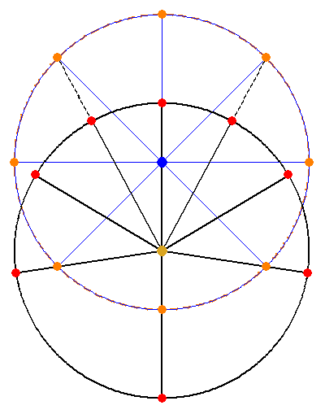

Chapter 21, exaggerated
Again, the planet locations (orange) lie both on the circle of the planet's orbit, and along the directional lines from the equant. The observed directions of Mars as seen from the sun are marked in red.
With this huge eccentricity, Kepler's statement on page 298 that
Also, since this third eccentric HI is equivalent to the first at positions AM, AP as well as to the second at the additional positions AK,AL, it introduces no new error.
appears untrue. AK and AL do move in this animation, but keep in mind that the motions of RSTL to EFGD are on the order of 9' or 28' for Mars, to these motions of AK and AL would be unmeasurably tiny.
|

|
|